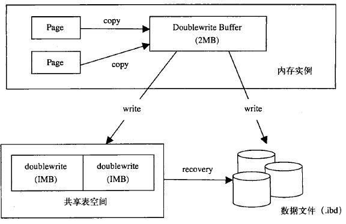
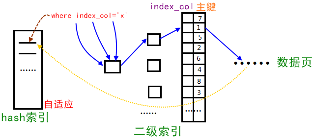

InnoDB
InnoDB 的四大特性
插入缓冲(insert buffer)
解决问题
- 非聚集索引插入的离散性。（指插入非聚集索引的索引页）
- 为了提高写的性能
具体实现
对于非聚集索引的插入或更新操作，不是每一次操作都直接插入索引页中，而是先判断插入的非聚集索引页是否在缓冲池中。
- 如果存在：则直接插入
- 如果不存在：则先放入一个插入缓冲区中，返回插入成功的结果（欺骗已经插入）
然后由 master thread 以一定的频率执行插入缓冲和非聚集索引叶子节点的合并操作，这时通常能将多个插入合并到一个 IO 操作中（因为多个插入在同一个索引叶节点中），提高了对非聚集索引的插入和更新性能。
条件
- 索引是非聚集索引
- 索引并非唯一索引
⚠️注：解释下为什么必须是非唯一的副主索引，如果是唯一索引，在插入时，需要查找辅助索引树，判断该记录是否存在以确保唯一性，查找过程就是随机读的过程，因此插入缓冲就没意义了。
缺陷
- 应用程序执行大量的插入和更新操作时，如果这个过程中数据库发生了宕机，会存在大量的插入缓冲未合并到实际的非聚集索引页中，如果这样，导致实例恢复时间变长，并且恢复会占用大量的磁盘 IO
- 占用内存过多：写密集的情况下，插入缓冲占用过多的缓冲池内存，默认情况下最大可以占用1/2的缓冲池内存，可能会对其他操作带来影响
二次写(double write)
为了提高可靠性牺牲了一点写性能。
解决问题
部分写失效：当数据库正在从内存向磁盘写一个数据页时，数据库宕机，从而导致这个页只写了部分数据，这就是部分写失效，它会导致数据丢失。这时是无法通过重做日志恢复的，因为重做日志记录的是对页的物理修改，如果页本身已经损坏，重做日志也无能为力。
具体实现

需要额外添加两个部分：
- 内存中的两次写缓冲（doublewrite buffer），大小为 2MB
- 磁盘上共享表空间中连续的 128 页，大小也为 2MB（用于存放数据页副本拷贝）
实现步骤：
- 当刷新缓冲池脏页时，并不直接写到数据文件中，而是先拷贝至内存中的两次写缓冲区
- 接着从两次写缓冲区分两次写入磁盘共享表空间中，每次写入 1MB（副本拷贝，额外性能开销）
- 待第2步完成后，再将两次写缓冲区写入数据文件
自适应哈希

Innodb 存储引擎会监控对表上二级索引的查找，如果发现某二级索引被频繁访问，二级索引成为热数据，建立哈希索引可以带来速度的提升。
经常访问的二级索引数据会自动被生成到 hash 索引里面去（最近连续被访问三次的数据），自适应哈希索引通过缓冲池的 B+ 树构造而来，因此建立的速度很快。
预读
InnoDB 行级锁的实现方式是？
InnoDB 行锁是通过给索引上的索引项加锁来实现的。
因此，只有通过索引条件检索数据，InnoDB 才使用行级锁，否则 InnoDB 将使用表锁。